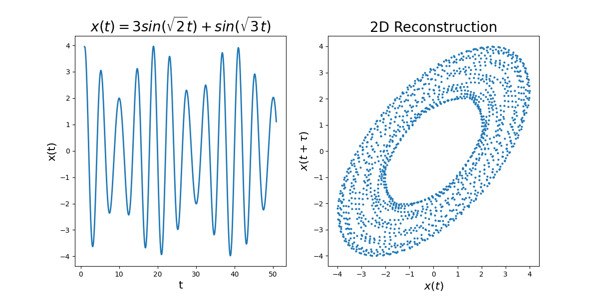
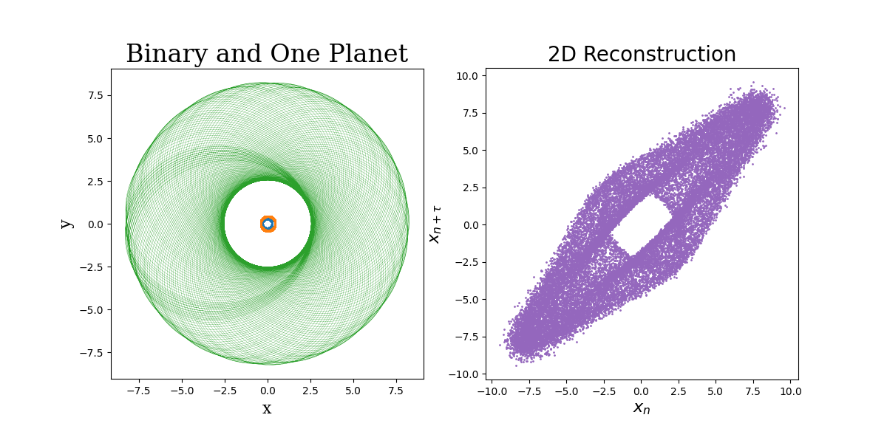

During my graduate coursework at UC Santa Cruz I took a course
in dynamical systems where I was assigned a project on phase space
reconstruction. Takens (1981) outlines a method for determining
whether or not a set of data can be attributed to a strange
attractor. By time sampling the data, one can create a phase
space diagram that, for systems governed by a strange attractor,
forms a distinctive torus like shape. With proper selection of the
number of dimensions and time sampling interval, this method
works even for noisy systems.
The below figure demonstrates the Takens theory of phase space
reconstruction for a non-chaotic system. The right panel depicts
time-delayed samples of the equation plotted at left. We can see
a structure form and, under Takens' theory, we can understand
the open donut shape to indicate the presence of an attractor.

What's remarkable about the Takens theory is that is also works
for chaotic and noisy systems where it may be less obvious that an
attractor is present. To demonstrate this, I took positions of
the planet in my n-body simulation and applied Gaussian noise to
them. The below figure illustates the 3 body system, one planet
and two stars, in the left panel and the phase space reconstruction
in the right panel. While the structure of the reconstruction is
not as clean and open as the simpler system above, the clear
structure and still somewhat present donut aspect indicate an
attractor governs the system. Of course, given that this is
a gravity simulation, we know that an attractor is indeed present.
